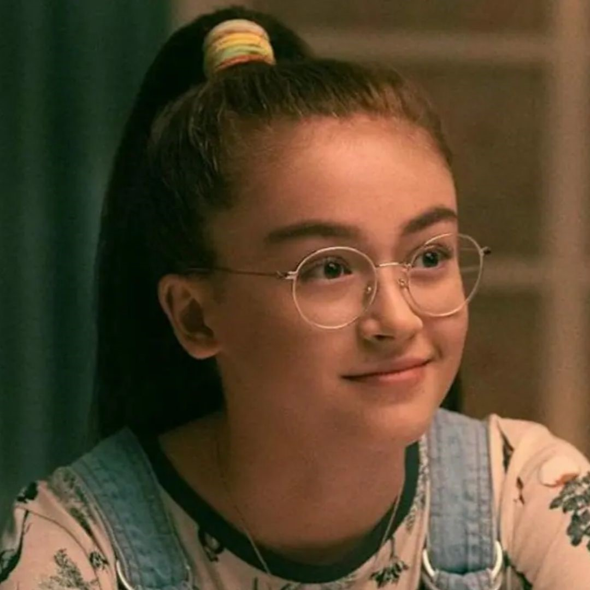
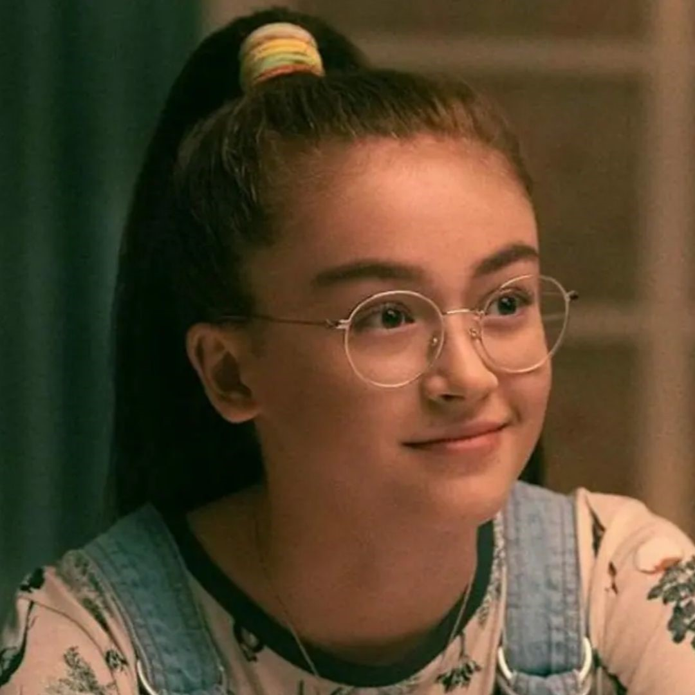

To all the boys I´ve lovely before. A triologia literária que encanta a todos que leem. Esta triologia, produzida pela escritora Jenny Han, cativa a todos que a leem pois ao olhar pensa-se que é apenas aqueles romances cliches que toda garota gosta de ler, mas a escritora consegue surpreender a cada pagina virada. Seu sucesso trouxe até filmes baseados nos livros, o serviço de streaming Netflix produziu-os e faz sucesso até os dias de hoje.